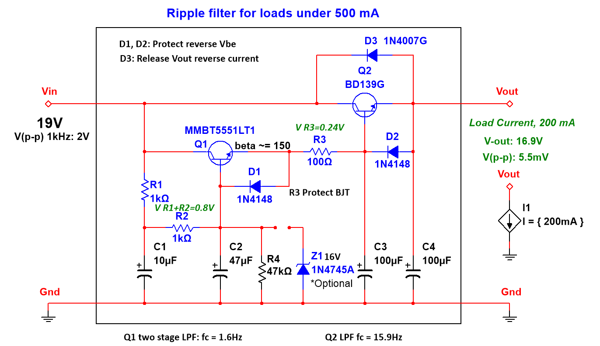
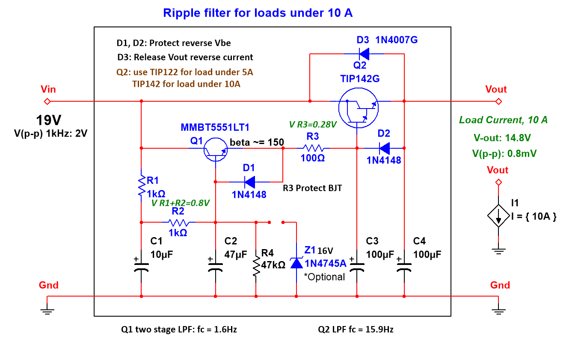
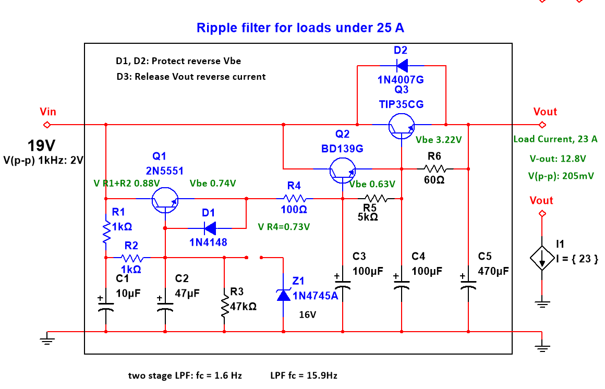

edited
High Current Ripple Filter
Ripple filter for power amplifiers. updated on
1. Introduction
I used to use small capacitor multiplier circuits as mains filters for headphone amps and preamps,
It worked great so I designed a high current version by using darlington transistors for my TDA7266
15+15W dual bridge amplifier.
And it also performs well. Maybe it can also be used with LM3886.
1.1 Features
- can output high current
- simple
- can work under higher voltage (depending on components)
- can work on negative voltage (by using PNP Transistor)
- can reduce power line ripple voltage and noise
2. Circuit
2.1 Ripple filter for current under 500mA:
2.2 Ripple filter for current under 10A:
2.3 Ripple filter for current under 25A:
2.4 Ripple filter for TDA7266 Stereo Amplifier:

"Good design is as little design as possible."
~ Dieter Rams